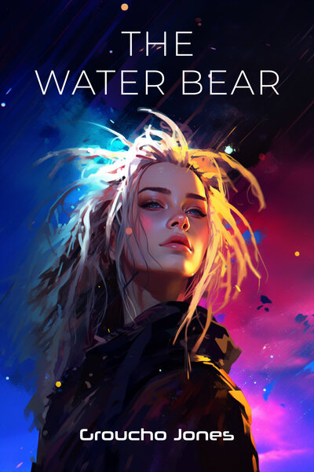

Science fiction.
I write the Thousand Worlds Cycle — literary science fiction about bodies at war, and a cosmos that may be a question someone is asking. Nested trilogies. Two books published, three on their way.
The ebooks are free. They always will be. Take them.
Books

The Water Bear Trilogy
The year is 2075. The people of Earth have been prevented from destroying their own planet. While protestors burn cars in the street, Ophelia Box — Scottish, a historian, entirely the wrong person for the job — is recruited into a covert peacekeeping unit whose mission is to prevent a genocide.
The problem is the genocide is in the past.
A story about soldiers: not how they kill, but what they protect, and what they are forced to become.
The Spiral · Book One
Kat Zam is cook aboard a rusting old hulk called the Seed King, plying the empty trade routes between Fluxor and Zz. Waldo Zam is an autistic poet who wages information warfare. Ke2 is an artist whose sculptures walk on the wind and carry secrets she doesn’t know she’s keeping. Hope is seventeen — a witch who washes dishes and knows right from wrong.
Above the ringworld Zz — a megastructure so vast its builders are mythology — nothing is what it appears.
The Spiral · Book Two
The cold of the paving stones seeped through her clothes. Hope had said to be quiet, but the secret was making a noise all its own — a ringing only the two of them could hear.
Hope had said not to worry. The parade would still exist in the infinity of possible outcomes, in the n-graph of their imaginations, like the pages in a book so big it hurt her head to think about it.
Sometimes she dreamed of counting infinity. She always woke before she got there.
Forthcoming. Join the list below to hear when it lands.
The Spiral Tribe
The trilogy is named for a sound system. In 1992 I was at Castlemorton Common with the Spiral Tribe, and the names in these books — Kat, Waldo, Ke2, Atomic — belong to real people from that posse. Any resemblance is accidental. As far as I know, none of them were alien spies — although I had my suspicions. Escape From Samsara and Return to the Source were parties before they were novels.
The list
New books and chapters, by email. Nothing else, ever.
Other work